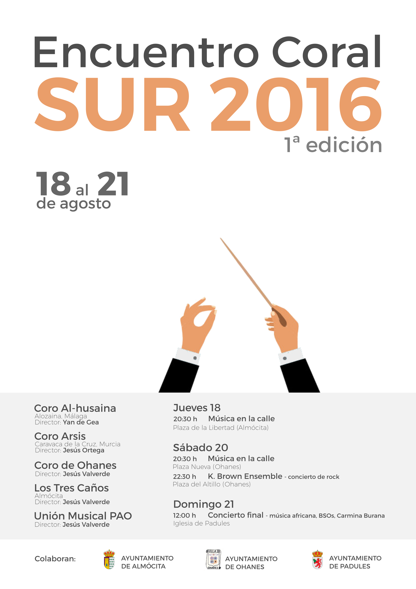

O Fortuna
Carmina Burana - Carl Orff

El Encuentro Coral Sur 2016 fue un encuentro de coros organizado por la Unión Musical P.A.O. en nuestros pueblos, Padules, Almócita y Ohanes, durante tres días de agosto de 2016. En él participaron el Coro de Ohanes, el Coro Arsys de Caravaca de la Cruz, Murcia, el Coro Al-husaina de Alozaina, Málaga, y la Banda de Música de la Unión Musical P.A.O. Durante los tres días se realizaron varios eventos, entre los que destacó el concierto final, en el que tocaron y cantaron todas las formaciones juntas.

Carmina Burana - Carl Orff